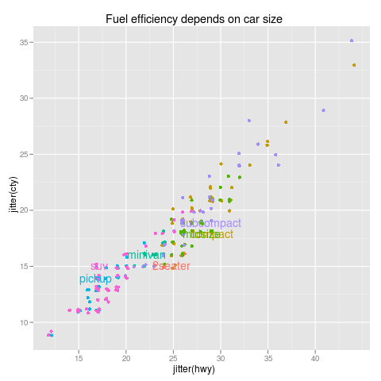

directlabels - scatterplot -
Positioning Function - perpendicular.lines
Draw a line between the centers of each cluster, then draw a
perpendicular line for each cluster that goes through its
center. For each cluster, return the point the lies furthest out
along this line.
perpendicular.lines <- function
### Draw a line between the centers of each cluster, then draw a
### perpendicular line for each cluster that goes through its
### center. For each cluster, return the point the lies furthest out
### along this line.
(d,
### Data frame with groups x y.
debug=FALSE,
### If TRUE will draw points at the center of each cluster and some
### lines that show how the points returned were chosen.
...
### ignored.
){
means <- get.means(d)
names(means)[2:3] <- c("mx","my")
big <- merge(d,means,by="groups")
fit <- lm(my~mx,means)
b <- coef(fit)[1]
m <- coef(fit)[2]
big2 <- transform(big,x1=(mx+x+(my-y)*m)/2)
big3 <- transform(big2,y1=m*(x1-x)+y)
big4 <- transform(big3,
d=sqrt((x-x1)^2+(y-y1)^2),
dm=sqrt((x-mx)^2+(y-my)^2))
big5 <- transform(big4,ratio=d/dm)
winners <- ddply(big5,.(groups),subset,
subset=seq_along(ratio)==which.min(ratio))
## gives back a function of a line that goes through the designated center
f <- function(v)function(x){
r <- means[means$groups==v,]
-1/m*(x-r$mx)+r$my
}
##dd <- ddply(means,.(groups),summarise,x=x+sdx*seq(0,-2,l=5)[-1])
##dd$y <- mdply(dd,function(groups,x)f(groups)(x))$x
if(debug){
## First find the mean of each cluster
grid.points(means$mx,means$my,default.units="native")
## myline draws a line over the range of the data for a given fun F
myline <- function(F)
grid.lines(range(d$x),F(range(d$x)),default.units="native")
## Then draw a line between these means
myline(function(x)m*x+b)
## Then draw perpendiculars that go through each center
for(v in means$groups)myline(f(v))
}
winners[,c("x","y","groups")]
### Data frame with groups x y, giving the point for each cluster
### which is the furthest out along the line drawn through its center.
}
 |
cylinders
data(mpg,package="ggplot2")
m <- lm(cty~displ,data=mpg)
mpgf <- fortify(m,mpg)
p <- mpg.scatter <- xyplot(.resid~.fitted,mpgf,groups=factor(cyl))
direct.label(p,"perpendicular.lines")
|
|  |
mpg
data(mpg,package="ggplot2")
p <- qplot(jitter(hwy),jitter(cty),data=mpg,colour=class,
main="Fuel efficiency depends on car size")
direct.label(p,"perpendicular.lines")
|